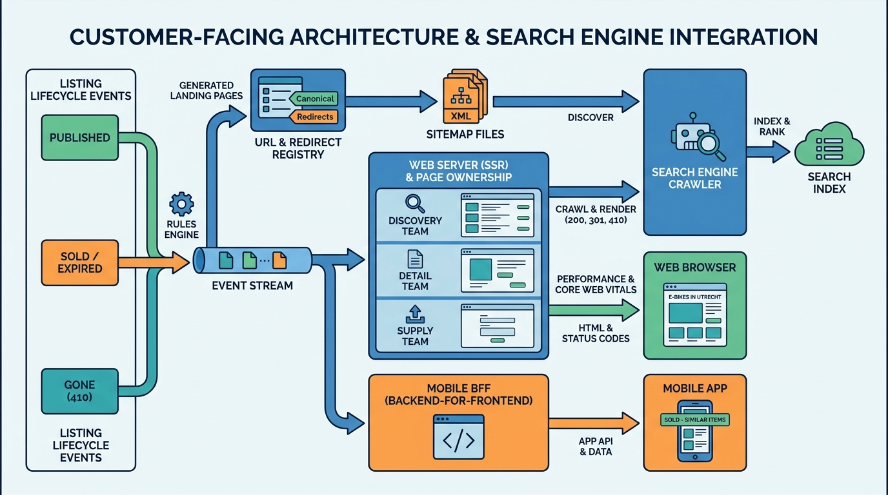

Part VII — PLATFORM: The Distributed System Underneath
Found by Google: Web, App and SEO Architecture for Listings

Image generated by Google Gemini (gemini-3-pro-image-preview)
Part VII — PLATFORM: The Distributed System Underneath

Image generated by Google Gemini (gemini-3-pro-image-preview)